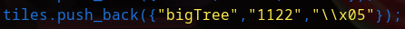
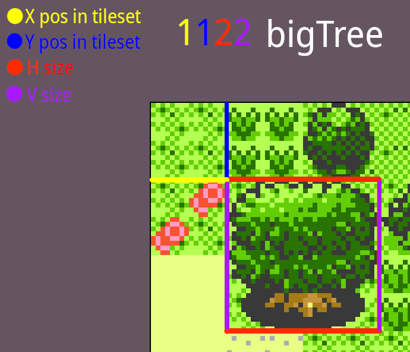
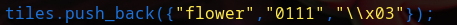
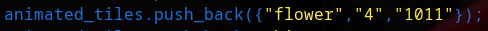
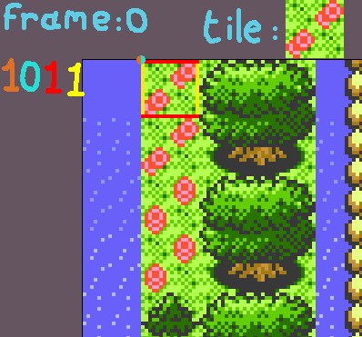
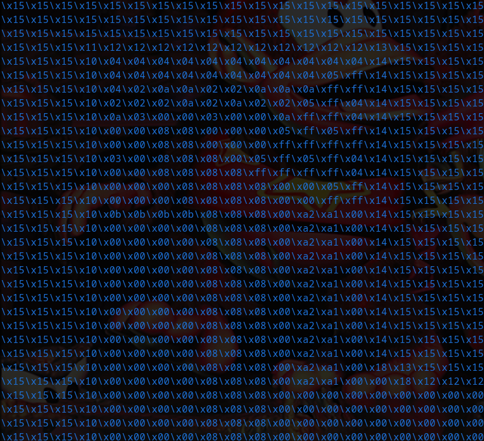
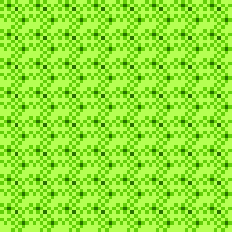

Terrain functions
terrainForm| Type | Name | Description/Usage |
|---|---|---|
| std::vector<std::vector<std::string>> | tiles | Used to store the vectors of regular tiles infos |
| std::vector<std::vector<std::string>> | animated_tiles | Used to store the vectors of animated tiles infos |
| std::vector<std::vector<sf::Texture>> | textures | Used to store the vector of animated tiles textures |
| std::vector<std::vector<std::vector<sf::Texture>>> | Animated_textures | used to store the 2d vectors of animated tiles textures |
| std::vector<std::vector<std::string>> | solids | Used to store the informations about tiles collisions |
| std::vector<sf::Texture> | morning_textures | Used to store the regular morning textures |
| std::vector<sf::Texture> | day_textures | Used to store the regular day textures |
| std::vector<sf::Texture> | night_textures | Used to store the regular night textures |
| std::vector<sf::Texture> | animated_morning_textures | Used to store the animated morning textures |
| std::vector<sf::Texture> | animated_day_textures | Used to store the animated day textures |
| std::vector<sf::Texture> | animated_night_textures | Used to store the animated night textures |
| Type | Name | Description/Usage |
|---|---|---|
| std::vector<std::vector<std::string>> | tiles_index | Used to store vector of tiles infos |
| Type | Name | Description/Usage |
|---|---|---|
| Terrain | terrain | Declared for use Terrain module functions |
| Sounds | SoundManager | Declared for use Sounds module functions |
| HUD | HUDDisplay | Declared for use HUD module functions |
| Player | player | Declared for use player module functions |
| TilesIndex | Tiles | Declared for use Tiles module functions |
| GSC_Functions | functions | Declared for use GSC_Functions module functions |
| double | version | Store the current version of the build |
| std::vector<std::vector<std::string>> | terrain_vector | Used to store the tiles indexes |
| std::string | terrain_vector | Used to store the current map file path |
| char | time_otd | Used to store the current time of the day ('m' or 'd' or 'n') |
| std::string | time_otd_str | Used to store the time_otd value as a string |
| sf::RenderWindow | window | The main window used in a lot of places |
| std::string | real_res | The resolution stored as a string |
| std::vector<int> | resolution_vec | The resolution stored as an int vector |
| bool | framerate_limit | Used to enable/disable the 60Hz framerate limit (used for debug and benchmark) |
| int | index_frame | Gets incremented every frame (used for tiles animations and time based events) |
| std::string | output_message | Used to display a message at bottom left corner of the screen (the displayed message is the value of this variable) |
| int | message_timer | Gets incremented every frame, used to display message. The message is displayed only when the value is below 60 |
| std::vector<int> | player_pos | Stores the player's current position |
| std::string | player_state | Stores the player state (for animation) |
| int | moving_timer | A value used for the player's animation |
| std::string | username | Stores the player's username |
| std::string | player_type | Stores the player's type (example: "b" , "g" or "m" ...) |
| bool | walking | Is set to true if the player is walking/moving otherwise, it is set to Is set to false |
| bool | can_move | Is set to true when in-game and is set to false when in menu (if can_move is set to true, the player can walk, otherwise, he can't) |
| std::string | copied_tile | Level editor only - Stores the copied tile index (default: \x00) |
| int | selected_tile_index | Level editor only - Stores the selected tile int index (default: 0) |
| int | copied_tile_index | Level editor only - Stores the copied tile int index (default: 0) |
| int | default_tile_index | Level editor only - Stores the default tile int index tile int index (default: 0) |
| std::vector<int> | pos1 | Level editor only - Stores the pos1 position (X and Y) |
| std::vector<int> | pos2 | Level editor only - Stores the pos2 position (X and Y) |
| bool | pos1set | Level editor only - Is set to true if the pos1 has been set, otherwise, it's set to false. |
| bool | pos2set | Level editor only - Is set to true if the pos2 has been set, otherwise, it's set to false. |
| bool | menu_show | Level editor only - If is set to true then the level editor menu is displayed, else it isn't. |
| bool | debug | If is set to true then the debug menu is displayed, else it isn't. |
| int | debug_page | Used to know which. |
| Key/Combo | Action |
|---|---|
| Arrows | Move arround the terrain/navigate throught the menu |
| Right Shift | Open/close editor menu |
| G | Place selected tile |
| V | Place copied tile |
| X | Remove tile (replaced with default tile) |
| Left Shift + X | Remove completely tile (replaced with empty tile) |
| C | Copy hovered tile |
| Left Shift + F | Fill square (from pos1 to pos2) |
| F1 | Take a screenshot |
| F3 | Place pos1 here |
| F4 | Place pos2 here |
Here is the list of the options of the level editor:
| Option name | Action |
|---|---|
| Camera speed | Modify the camera speed |
| Map width | Modify the map width |
| Map height | Modify the map heigth |
| Default tile | Modify the default tile (default terrain tile) |
| Selected tile | Modify the default tile (tile used when placing tiles) |
| Load map | Loads a selected map file |
| Save map | Save the map in a .lv file |
| Fill square | Fill square (from pos1 to pos2) after confirmation |
| Options | Open level editor settings |
| Smart rock | Format all rocks to make them respect rock patterns show example |
| Controls | Open the controls window |
GSC Online is fully written in C++ and uses the SFML 2 library
Tiles indexes are stored as string vectors in a vector inside of the TilesIndex class (in functions/tiles.cpp)
Here is an example:

I'm gonna explain the three strings above:
first string: the tile name, when displayed in debug menus or in level editor.
second string: the position and the size of the tile in the tileset.
third string: the tile index, used in level editor and in saved maps.
When they are declared, tiles are ripped from the 3 diffrents tilesets and saved in 3 diffrents texture vectors.
(first is for morning textures, second is for day textures, and third is for night textures)
They are ripped thanks to the second string in tile declation (in our example it is the "1122" string)
the second string is always splitted in 4 integers:
first: the X position in the tileset
second: the Y position in the tileset
third: the horizontal size of the tile
fourth: the vertical size of the tile
note: horizontal and vertical sizes are multiplied by 16, so 11 means a 16x16 tile

Then, in the showTerrain function, the function show the texture that's associated with the tile index by getting it's position in the tiles vector because the tiles have the same position as their textures in the textures vector.
For example the bigTree index is \x05, so when the showTerrain sees a \x05, it get the tile position, then acces to it's texture, in the texture vector by using the tile position.
Animated tiles are stored the same way as basic tiles, but their textures are stored in a vector of textures vector
For make a tile animated, you first need to declare it as a classic tile:
Example:

Then you declare it as a animated tile like this:

note: the animated tile name (first string in declaration) must be an existing name in tiles vector,
otherwise, the animated tile could not be displayed.
I'm gonna explain the three strings above:
first string: tile name
second string: number of frames
third string: animation position and size
In our example:
The second string is "1011", and it will be ripped in four integers:
first: the X pos of the animation first frame
second: the Y pos of the animation first frame
third: the horizontal size of a frame
fourth: the vertical size of a frame
Explaination of
1011
So here, the starting point is at X=1 and Y=0, and the frame is 16x16 (1*16 & 1*16)

Here is how animated tiles are stored in the frames vectors.
Example of frames vector:
{
{water_frame0_texture, water_frame1_texture, water_frame2_texture},
{flower_frame0_texture, flower_frame1_texture}
}
Map are stored in .lv files (if it's not .lv, it will work if structured well), here is what a file level looks like:

When a map is loaded, the terrain_vector is cleared and then the map file is read and does this process:
for each line: a empty vector is added in terrain_vector
for each tile: tile is added in terrain_vector last line
Example:
{
{"\\x00","\\x00","\\x00","\\x00"},
{"\\x00","\\x00","\\x00","\\x00"},
{"\\x00","\\x00","\\x00","\\x00"},
{"\\x00","\\x00","\\x00","\\x00"}
}
This example is a map of 4x4 grass tiles
Map when rendered:

First of all, you need to know than the terrain you are standing on when in game is stored in a 2D vector of tiles indexes (\x00 is a tile index, grass is not)
Once the terraini vector is set, every frame the showTerrain function is called
GSC Online is fully written in C++ and uses the SFML 2 library
terrainForm(terrain_vector , map_path)
Reading the map file at the given path and then reading the file line by line, then every 4 letters, it adds the tile in the terrain_vector.
terrain_vector = std::vector<std::vector<std::string>>
map_path = std::string
showTerrain(terrain_vector , player_pos , time_otd , window , player_camera , light_stand , frame_index)
Display the terrain. (no shit)
getIndex(index)
Go for each tile in the tiles vector and if the index matches an index in the
Mods needs to be saved as .cpp format and to be in a folder called "mods" next to the game file